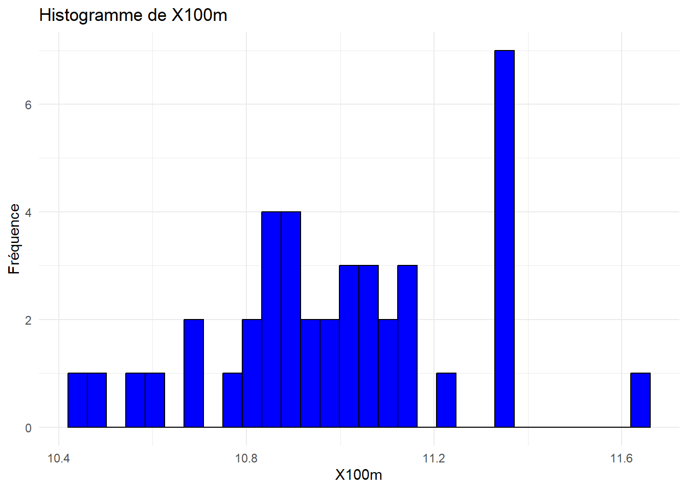
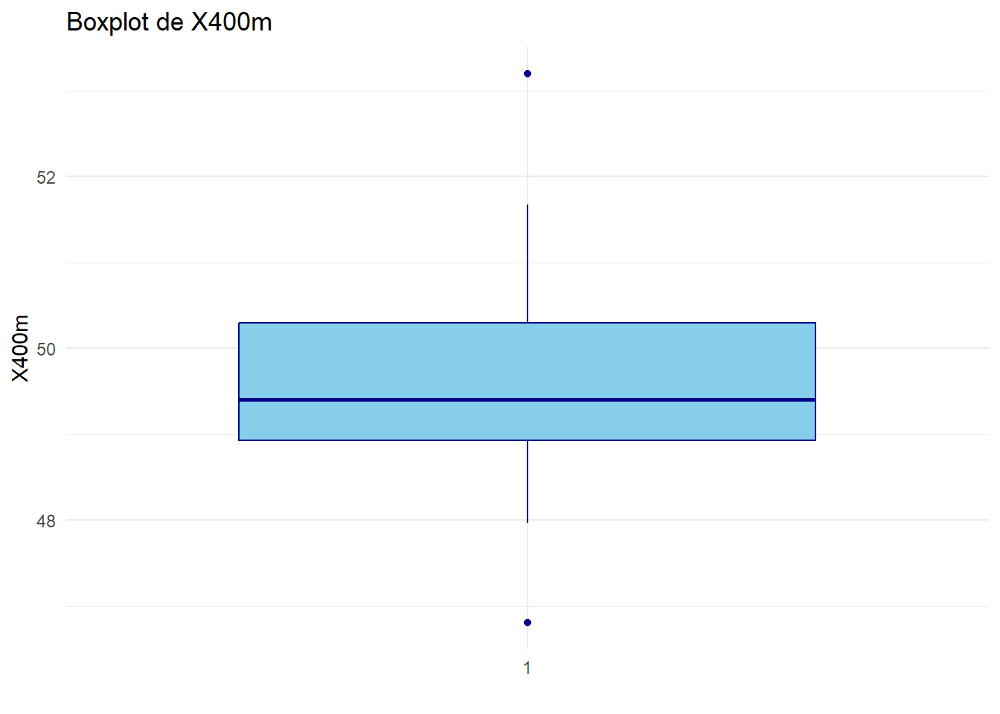
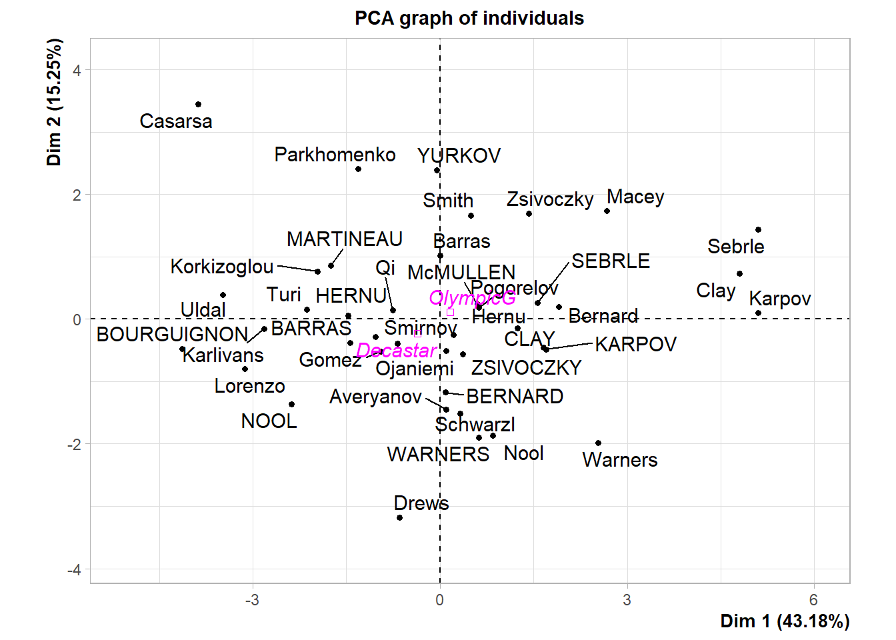
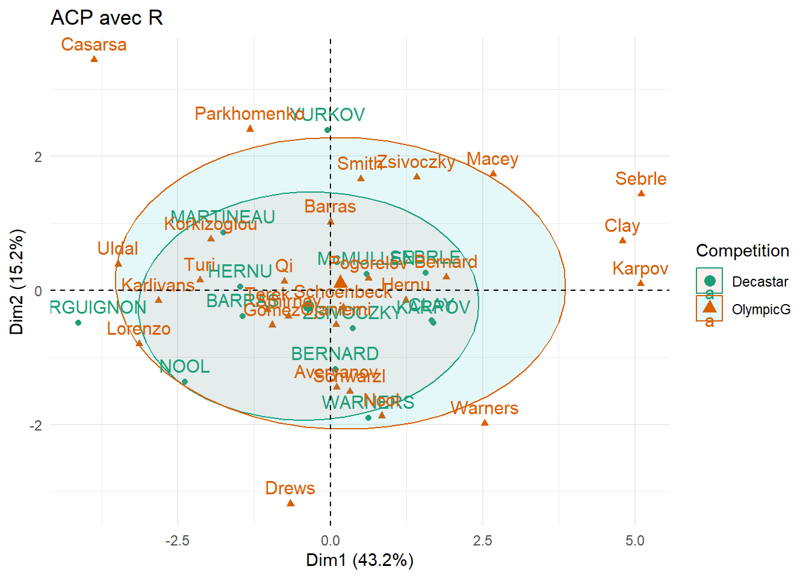

# Importer les données
decathlon_data = read.table("data_raw/decathlon.txt", header = TRUE, sep = "\t")ACP - Premier exemple avec R
Le fichier source de cette page est disponible via ce lien.
La base de données
La base de données regroupe les performances de 41 athlètes lors d’un décathlon. Chaque ligne correspond à un athlète et indique ses résultats aux différentes épreuves (100 m, saut en longueur, lancer du poids, etc), son classement, son total de points et le nom de la compétition.
L’analyse en composantes principales (ACP) a deux objectifs :
Analyser les épreuves : repérer celles qui sont corrélées entre elles, déterminer les plus influentes sur le score total et identifier des groupes d’épreuves liées.
Analyser les athlètes : repérer des profils de compétences similaires, mettre en évidence ceux qui se distinguent dans certaines disciplines et visualiser la répartition des performances selon leurs points forts et faibles.
Voici le lien vers la base de données. Téléchargez cette base de donnée et sauvegardez là dans votre dossier data_raw.
Importation des données
Les variables sont :
X100m: 100mLong.jump: Saut en longueurShot.put: Lancer de poidsHigh.jump: Saut en hauteurX400m: 400mX110m.hurdle: 110m HaiesDiscus: Lancer de disque
Pole.vault: Saut à la percheJaveline: Lancer de javelotX1500m: 1500mRank: ClassementPoints: PointsCompetition: Compétitions
Analyse des valeurs manquantes
En pratique il y a toujours des valeurs manquantes dans une base de données. Il est donc nécessaire de les analyser.
# Fonction pour calculer la proportion de valeurs manquantes par variable
prop.missing.val = function(data) {
# Calcul du nombre de valeurs manquantes par colonne
nb.missing.val <- sapply(data, function(x) sum(is.na(x)))
# Calcul de la proportion de valeurs manquantes
prop.missing <- nb.missing.val / nrow(data)
# Création d'un dataframe pour le résultat
resultat <- data.frame(Nombre = nb.missing.val, Proportion = prop.missing)
return(resultat)
}
# Utilisation de la fonction avec votre base de données
Analyse.Missing.Values = prop.missing.val(decathlon_data)
# Affichage du résultat
Analyse.Missing.Values Nombre Proportion
X100m 0 0
Long.jump 0 0
Shot.put 0 0
High.jump 0 0
X400m 0 0
X110m.hurdle 0 0
Discus 0 0
Pole.vault 0 0
Javeline 0 0
X1500m 0 0
Rank 0 0
Points 0 0
Competition 0 0Un package très interessant pour analyser les valeurs manquantes est le package VIM.
# Charger le package VIM
library(VIM)# Utilisation de la fonction aggr() pour visualiser les valeurs manquantes
aggr(decathlon_data,
col=c('navyblue','yellow'),
numbers=TRUE,
sortVars=TRUE,
labels=names(decathlon_data),
cex.axis=0.9,
gap=4,
ylab=c("Histogram of missing values","Pattern")
)
Variables sorted by number of missings:
Variable Count
X100m 0
Long.jump 0
Shot.put 0
High.jump 0
X400m 0
X110m.hurdle 0
Discus 0
Pole.vault 0
Javeline 0
X1500m 0
Rank 0
Points 0
Competition 0Description des données
summary(decathlon_data) X100m Long.jump Shot.put High.jump X400m
Min. :10.44 Min. :6.61 Min. :12.68 Min. :1.850 Min. :46.81
1st Qu.:10.85 1st Qu.:7.03 1st Qu.:13.88 1st Qu.:1.920 1st Qu.:48.93
Median :10.98 Median :7.30 Median :14.57 Median :1.950 Median :49.40
Mean :11.00 Mean :7.26 Mean :14.48 Mean :1.977 Mean :49.62
3rd Qu.:11.14 3rd Qu.:7.48 3rd Qu.:14.97 3rd Qu.:2.040 3rd Qu.:50.30
Max. :11.64 Max. :7.96 Max. :16.36 Max. :2.150 Max. :53.20
X110m.hurdle Discus Pole.vault Javeline
Min. :13.97 Min. :37.92 Min. :4.200 Min. :50.31
1st Qu.:14.21 1st Qu.:41.90 1st Qu.:4.500 1st Qu.:55.27
Median :14.48 Median :44.41 Median :4.800 Median :58.36
Mean :14.61 Mean :44.33 Mean :4.762 Mean :58.32
3rd Qu.:14.98 3rd Qu.:46.07 3rd Qu.:4.920 3rd Qu.:60.89
Max. :15.67 Max. :51.65 Max. :5.400 Max. :70.52
X1500m Rank Points Competition
Min. :262.1 Min. : 1.00 Min. :7313 Length:41
1st Qu.:271.0 1st Qu.: 6.00 1st Qu.:7802 Class :character
Median :278.1 Median :11.00 Median :8021 Mode :character
Mean :279.0 Mean :12.12 Mean :8005
3rd Qu.:285.1 3rd Qu.:18.00 3rd Qu.:8122
Max. :317.0 Max. :28.00 Max. :8893 # Charger les packages
library(ggplot2)
# Identifier les colonnes quantitatives
var.quanti = sapply(decathlon_data, is.numeric)
# Créer un histogramme pour chaque variable quantitative
for (var in names(decathlon_data)[var.quanti]) {
print(ggplot(decathlon_data, aes_string(x = var)) +
geom_histogram(bins = 30, fill = "blue", color = "black") +
theme_minimal() +
labs(title = paste("Histogramme de", var), x = var, y = "Fréquence"))
}Warning: `aes_string()` was deprecated in ggplot2 3.0.0.
ℹ Please use tidy evaluation idioms with `aes()`.
ℹ See also `vignette("ggplot2-in-packages")` for more information.


Question
Analyser et interpréter ces histogrammes.
# Créer un boxplot pour chaque variable quantitative
for (var in names(decathlon_data)[var.quanti]) {
print(ggplot(decathlon_data, aes_string(x = factor(1), y = var)) +
geom_boxplot(fill = "skyblue", color = "darkblue") +
theme_minimal() +
labs(title = paste("Boxplot de", var), x = "", y = var))
}
Question
Analyser et interpréter ces boxplots.
# Charger le package
library(dplyr)
Attaching package: 'dplyr'The following objects are masked from 'package:stats':
filter, lagThe following objects are masked from 'package:base':
intersect, setdiff, setequal, union# Fonction pour créer un barplot en proportions
creer_barplot_proportion <- function(data, column_name) {
# Calculer les proportions
proportions <- data %>%
count(.data[[column_name]]) %>%
mutate(Proportion = n / sum(n))
# Créer le barplot
ggplot(proportions, aes_string(x = column_name, y = "Proportion", fill = column_name)) +
geom_bar(stat = "identity") +
scale_y_continuous(labels = scales::percent_format()) +
labs(x = column_name, y = "Proportion (%)") +
theme_minimal()
}
# Créer un barplot pour la variable "Compétition"
creer_barplot_proportion(decathlon_data, "Competition")
Question
Analyser et interpréter ces barplots
Corrélations entre les variables quantitatives
# Charger les packages
library(ggplot2)
library(corrplot)corrplot 0.95 loadeddata.quanti = decathlon_data[, var.quanti]
# Calculer la matrice de corrélation
Matrice.Correlation <- cor(data.quanti, use = "complete.obs")
# Créer la heatmap de corrélation avec des coefficients plus visibles
corrplot(Matrice.Correlation,
method = "color",
type = "upper",
order = "hclust",
tl.col = "black",
tl.srt = 45,
addCoef.col = "black", # Couleur des coefficients
cl.pos = "n", # Position de la légende de couleur
cl.cex = 1.2, # Taille de la légende de couleur
addCoefasPercent = TRUE, # Afficher les coefficients en pourcentage
number.cex = 0.8) # Taille des chiffres des coefficients
Question
Analyser et interpréter cette matrice de corrélation, et plus particulèrment la heatmap ci-dessus.
Centrer et réduire les données
# Centrer et réduire les données
data.CR <- scale(data.quanti,center = TRUE,scale=TRUE)
Question
Regarder data.CR et eventuellement vérfier quelques coeeficients à la main.
Réalisation de l’ACP
# Charger les packages
library(devtools)
library(FactoMineR)
library(remotes)
install_github("kassambara/factoextra")
library(factoextra)# Réaliser l'ACP
Mon.ACP <- PCA(data.CR, graph = FALSE)
# Afficher les résultats de l'ACP
Mon.ACP**Results for the Principal Component Analysis (PCA)**
The analysis was performed on 41 individuals, described by 12 variables
*The results are available in the following objects:
name description
1 "$eig" "eigenvalues"
2 "$var" "results for the variables"
3 "$var$coord" "coord. for the variables"
4 "$var$cor" "correlations variables - dimensions"
5 "$var$cos2" "cos2 for the variables"
6 "$var$contrib" "contributions of the variables"
7 "$ind" "results for the individuals"
8 "$ind$coord" "coord. for the individuals"
9 "$ind$cos2" "cos2 for the individuals"
10 "$ind$contrib" "contributions of the individuals"
11 "$call" "summary statistics"
12 "$call$centre" "mean of the variables"
13 "$call$ecart.type" "standard error of the variables"
14 "$call$row.w" "weights for the individuals"
15 "$call$col.w" "weights for the variables" Choix du nombre d’axe factoriel
My.Eigenvalues <- Mon.ACP$eig
My.Eigenvalues eigenvalue percentage of variance cumulative percentage of variance
comp 1 4.758790e+00 3.965659e+01 39.65659
comp 2 1.740146e+00 1.450122e+01 54.15780
comp 3 1.414902e+00 1.179085e+01 65.94866
comp 4 1.131778e+00 9.431483e+00 75.38014
comp 5 8.619423e-01 7.182852e+00 82.56299
comp 6 6.073189e-01 5.060991e+00 87.62398
comp 7 5.104506e-01 4.253755e+00 91.87774
comp 8 4.110845e-01 3.425704e+00 95.30344
comp 9 2.352087e-01 1.960072e+00 97.26351
comp 10 1.873636e-01 1.561364e+00 98.82488
comp 11 1.409606e-01 1.174671e+00 99.99955
comp 12 5.402403e-05 4.502002e-04 100.00000
Question
Analyser My.Eigenvalues
barplot(My.Eigenvalues[, 2],
names.arg=1:nrow(My.Eigenvalues),
main = "Pourcentage de la variance expliquée par chaque composante",
xlab = "Composantes principales",
ylab = "Pourcentage de variance expliquée",
col ="steelblue")
lines(x = 1:nrow(My.Eigenvalues),
My.Eigenvalues[, 2],
type="b",
pch=19,
col = "black")
La « règle du coude »
La règle consiste à rechercher, s’il existe, un “coude” dans le graphe ci-dessus et de ne conserver que les valeurs propres jusqu’à ce coude.
Question
Combien d’axes principales est-il pertinent de choisir.
Cercle de corrélation
# Créer le graphique du cercle de corrélation
fviz_pca_var(Mon.ACP,
col.var = "cos2", # Utiliser la qualité de représentation (cos2) pour la couleur
gradient.cols = c("#00AFBB", "#E7B800", "#FC4E07"), # Palette de couleurs
repel = TRUE, # Éviter le chevauchement des étiquettes
title = "Cercle de Corrélation des Variables (cos2)")Warning: Using `size` aesthetic for lines was deprecated in ggplot2 3.4.0.
ℹ Please use `linewidth` instead.
ℹ The deprecated feature was likely used in the ggpubr package.
Please report the issue at <https://github.com/kassambara/ggpubr/issues>.
Qualité de réprésentation des variables
Le cos2 est une mesure de qualité de représentation d’un individu ou d’une variable sur un plan factoriel dans une Analyse en Composantes Principales (ACP). Il indique dans quelle mesure un point est bien représenté par les axes choisis.
C’est en fait le carré du cosinus de l’angle entre le point et l’axe du plan factoriel. Il varie donc entre 0 et 1.
proche de 1 \(\to\) le point est bien représenté sur le plan (sa position est bien restituée).
proche de 0 \(\to\) le point est mal représenté (il est mieux décrit sur d’autres axes).
Analyse d’un cercle de corrélation
Une flèche longue représente une variable bien représentée, forte corrélation avec les axes. Au contraire une flèche courte représente une variable mal représentée sur ce plan. (Qualité)
Angle entre les flèches :
0° : variables fortement corrélées positivement
90° : variables indépendantes
180° : variables corrélées négativement
Lorsqu’une flèche est proche d’un axe, la variable contribue principalement à cet axe.
Question
Analyser en détail ce cercle de corrélation des variables. Est-ce en accord avec votre analyse de la matrice de corrélation ?
Des suggestions pour les athlètes ?
# Créer le graphique du cercle de corrélation
fviz_pca_var(Mon.ACP,
col.var = "contrib", # Utiliser la contribution
gradient.cols = c("#00AFBB", "#E7B800", "#FC4E07"), # Palette de couleurs
repel = TRUE, # Éviter le chevauchement des étiquettes
title = "Cercle de Corrélation des Variables (contribution)")
Note
contrib permet d’indiquer quelle proportion de la variance de l’axe est expliquée par chaque variable.
Une variable peut avoir un cos2 élevé sur le plan (bien représentée), mais une faible contribution contrib à l’axe 1 si elle est surtout corrélée avec l’axe 2.
Une variable avec un contrib élevée sur l’axe 1 influence fortement la formation de cet axe.
Question
Analyser en détail ce cercle de corrélation des variables.
A present que nous avons analyser chaque variable, il est nécessaire d’analyser chaque individu.
# Coordonnées des individus
head(Mon.ACP$ind$coord) Dim.1 Dim.2 Dim.3 Dim.4 Dim.5
SEBRLE 1.50509908 0.7038928 0.9418516 1.4300073 0.57877082
CLAY 1.55741711 0.5554568 2.1891163 -0.5335835 -0.78038352
KARPOV 1.59996822 0.4625653 2.0569580 -1.5276391 1.57216651
BERNARD 0.08242073 -0.9779441 0.9724700 2.4695691 0.08487193
YURKOV -0.03923536 2.0507210 -1.0717485 1.5007847 1.41509091
WARNERS 0.63094174 -1.7190474 0.8258308 -0.3128895 1.15564917# Cos 2 des individus
head(Mon.ACP$ind$cos2) Dim.1 Dim.2 Dim.3 Dim.4 Dim.5
SEBRLE 0.2822876661 0.06174116 0.1105418 0.25482276 0.0417421654
CLAY 0.1721144249 0.02189313 0.3400518 0.02020283 0.0432139102
KARPOV 0.1973363095 0.01649417 0.3261633 0.17989779 0.1905378987
BERNARD 0.0007769458 0.10938200 0.1081609 0.69752562 0.0008238458
YURKOV 0.0001547923 0.42287035 0.1154994 0.22648052 0.2013551540
WARNERS 0.0611270308 0.45376449 0.1047218 0.01503269 0.2050722061#Contribution des individus
head(Mon.ACP$ind$contrib) Dim.1 Dim.2 Dim.3 Dim.4 Dim.5
SEBRLE 1.1610468554 0.6944540 1.529166 4.4068816 0.94787531
CLAY 1.2431669421 0.4324451 8.260899 0.6135638 1.72327322
KARPOV 1.3120255194 0.2999001 7.293576 5.0291713 6.99415163
BERNARD 0.0034817093 1.3404743 1.630204 13.1430836 0.02038291
YURKOV 0.0007889962 5.8944540 1.980047 4.8539096 5.66639235
WARNERS 0.2040319080 4.1419623 1.175633 0.2109778 3.77911393
Question
Analyser cette sortie.
# Contribution des variables à l'axer principale 1"
fviz_contrib(Mon.ACP, choice = "var", axes = 1, top = 4)# Contributions des variables à l'axer principale 2
fviz_contrib(Mon.ACP, choice = "var", axes = 2, top = 10)
Question
Analyser la contributon de chacune des variables aux deux axes principaux.
# Cosinus carré des variables sur la première composante principale (PC1)
fviz_cos2(Mon.ACP, choice = "var", axes = 1, top = 10) +
ggtitle("Qualité de la représentation des variables sur la PC1 (cos²)")# Cosinus carré des variables sur la deuxième composante principale (PC2)
fviz_cos2(Mon.ACP, choice = "var", axes = 2, top = 10) +
ggtitle("Qualité de la représentation des variables sur la PC2 (cos²)")
Question
Analyser la qualité de la représentation de chacune des variables aux deux axes principaux.
Nuages des individus
fviz_pca_ind(Mon.ACP, col.ind="cos2") +
scale_color_gradient2(low="blue", mid="white",
high="red", midpoint=0.50)+
theme_minimal()
Question
Analyser la représentation de la représentation ci-dessus. En particulier, quels sont les individus qui sont bien représentés et contribuent le plus à la formation des axes principaux ?
# Filtrer les individus avec cos² > 50%
ind_cos2 <- apply(Mon.ACP$ind$cos2, 1, max) > 0.5
# Filtrer les variables avec cos² > 50%
var_cos2 <- apply(Mon.ACP$var$cos2, 1, max) > 0.5
# Créer un graphique combiné des individus et des variables
fviz_pca_biplot(Mon.ACP,
select.ind = list(cos2 = 0.5), # Sélectionner les individus avec cos² > 50%
select.var = list(cos2 = 0.5), # Sélectionner les variables avec cos² > 50%
repel = TRUE, # Éviter le chevauchement des étiquettes
title = "Biplot des Individus et des Variables (cos² > 50%)",
col.ind = "blue", # Couleur des individus
col.var = "red" # Couleur des variables
)
Question
Avec ce biplot, tenter de faire le lien entre les analyses sur les individus et les variables.
Variables supplémentaires
Variable supplémentaire
Une variable supplémentaire sans une ACP est une variable qui n’entre pas dans le calcul des axes principaux mais peut être projetée sur le plan factoriel pour interprétation. Elle n’influence pas la construction des composantes principales. Elle sert uniquement à aider l’interprétation des résultats. Elle peut être quantitative ou qualitative.
Mon.ACP <- PCA(decathlon_data,
quanti.sup = 10,
quali.sup = 13, # Numéro de colonne de la variable qualitative
graph = TRUE)Warning: ggrepel: 2 unlabeled data points (too many overlaps). Consider
increasing max.overlaps

# Création du graphique
fviz_pca_ind(Mon.ACP,
habillage = 13, # Utiliser la 13ème colonne pour le coloriage
addEllipses = TRUE,
ellipse.level = 0.68) +
scale_color_brewer(palette = "Dark2") + # Palette de couleurs
theme_minimal() + # Thème minimaliste
ggtitle("ACP avec R") # Ajouter un titre (assurez-vous que le titre n'est pas NA/NaN)
Mon.ACP$quali.sup$coord
Dim.1 Dim.2 Dim.3 Dim.4 Dim.5
Decastar -0.3565568 -0.2310813 0.3444772 0.7387878 -0.5286587
OlympicG 0.1655442 0.1072877 -0.1599358 -0.3430086 0.2454487
$cos2
Dim.1 Dim.2 Dim.3 Dim.4 Dim.5
Decastar 0.09532976 0.0400406 0.08897991 0.4092706 0.2095665
OlympicG 0.09532976 0.0400406 0.08897991 0.4092706 0.2095665
$v.test
Dim.1 Dim.2 Dim.3 Dim.4 Dim.5
Decastar -0.7050037 -0.7689493 1.381099 3.359027 -2.613954
OlympicG 0.7050037 0.7689493 -1.381099 -3.359027 2.613954
$dist
Decastar OlympicG
1.1548204 0.5361666
$eta2
Dim.1 Dim.2 Dim.3 Dim.4 Dim.5
Competition 0.01242575 0.01478208 0.04768587 0.2820765 0.1708189
Note
Le v.test est une statistique qui mesure la relation entre un groupe d’individus (variable qualitative) et la position des individus sur un axe factoriel.
Il est utilisé pour les variables qualitatives supplémentaires, afin de savoir si les individus d’un certain groupe sont significativement plus élevés ou plus faibles sur un axe donné.
En pratique, afin d’avoir un lien significatif il faut que le coefficient en valeur absolue soit supperieur à 1,96.
Mon.ACP$quanti.sup$coord
Dim.1 Dim.2 Dim.3 Dim.4 Dim.5
X1500m -0.08101474 0.124414 0.1151478 0.2692549 0.4492733
$cor
Dim.1 Dim.2 Dim.3 Dim.4 Dim.5
X1500m -0.08101474 0.124414 0.1151478 0.2692549 0.4492733
$cos2
Dim.1 Dim.2 Dim.3 Dim.4 Dim.5
X1500m 0.006563388 0.01547885 0.01325902 0.07249818 0.2018465
la focntion dimdesc
Pour les variables quantitatives, cette focntion calcule la corrélation entre chaque variable et chaque axe. Plus la corrélation est élevée, plus la variable contribue à l’axe.
Pour les variables qualitatives, cette fonction calcule le V-test pour chaque modalité sur chaque axe.Elle permet de voir quelles modalités sont sur-représentées ou sous-représentées sur un axe
res.desc <- dimdesc(Mon.ACP, axes = c(4,5), proba = 0.05)
res.desc$Dim.4
Link between the variable and the continuous variables (R-square)
=================================================================================
correlation p.value
X100m 0.3606946 2.051769e-02
Rank -0.3182313 4.258959e-02
Javeline -0.6541163 3.515093e-06
Link between the variable and the categorical variable (1-way anova)
=============================================
R2 p.value
Competition 0.2820765 0.0003533077
Link between variable and the categories of the categorical variables
================================================================
Estimate p.value
Competition=Decastar 0.5408982 0.0003533077
Competition=OlympicG -0.5408982 0.0003533077
$Dim.5
Link between the variable and the continuous variables (R-square)
=================================================================================
correlation p.value
X1500m 0.4492733 0.003212199
Discus 0.3210000 0.040722336
X100m -0.3163774 0.043878419
High.jump -0.4464054 0.003438064
Link between the variable and the categorical variable (1-way anova)
=============================================
R2 p.value
Competition 0.1708189 0.007234681
Link between variable and the categories of the categorical variables
================================================================
Estimate p.value
Competition=OlympicG 0.3870537 0.007234681
Competition=Decastar -0.3870537 0.007234681
Question
Analyser l’apport de ces variables supplémentaires.